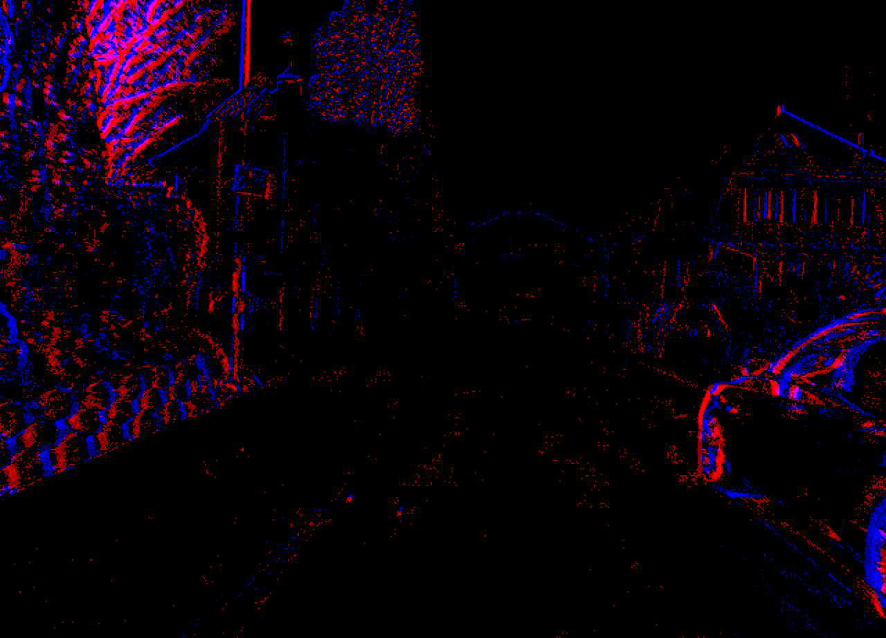
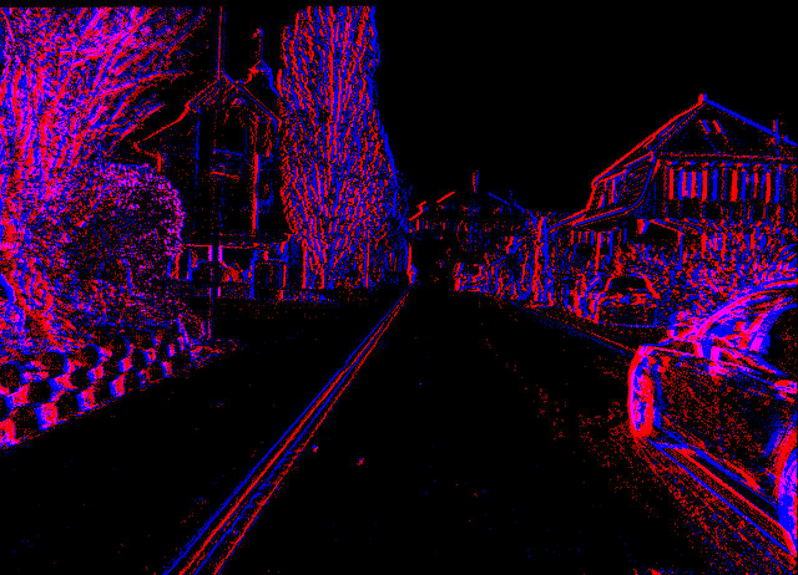

EvGaze
Motion on Demand
Adaptive Optical Excitation for Event Cameras
- 1Shenzhen Graduate School, Peking University
- 2School of Future Technology, Dalian University of Technology
- 3School of Artificial Intelligence, Shanghai Jiao Tong University
*Equal contribution †Corresponding authors
Overview video
Overview video
EvGaze spins a wedge prism in front of an event camera only as fast as the scene needs: it reveals the edges that natural motion leaves invisible, and stops paying for events once the scene moves by itself.
−39%
events vs. full-speed rotation on EvMotion, while recovering more edges
0.55→0.73
feature-tracking success S@1 on DSEC, native events vs. EvGaze
−17%
average event rate on the physical prototype vs. full-speed rotation
Teaser
Abstract
Event cameras respond only to brightness changes, so whether an edge is visible depends on image motion perpendicular to it—a motion that constantly shifts with camera and scene dynamics. Rotating a wedge prism in front of the lens introduces controlled image motion to reveal static or slow edges. However, a fixed rotation speed cannot adapt to changing motion conditions: when natural motion is already sufficient, additional optical excitation generates redundant events and introduces unnecessary alignment errors.
Inspired by the division of labor between fast haltere feedforward and slower visual feedback in fly gaze control, we present EvGaze, an event camera system that adaptively regulates prism rotation speed. EvGaze employs a learned multimodal controller that integrates luminance, event, and inertial observations, with a fast inertial pathway that refines speed decisions between visual updates. To preserve geometric consistency during speed changes, we compensate for prism-induced image motion at individual event timestamps using measured encoder angles.
On EvMotion, EvGaze recovers more edges than full-speed prism rotation with 39% fewer events. On DSEC with simulated optical modulation, it reaches 0.73 feature-tracking success (compared with 0.55 on native events and 0.67 at 180 RPM) while generating 26% fewer events than 360 RPM. Real-device experiments further demonstrate online closed-loop adaptation, reducing average event rates by 17% relative to full-speed rotation.
Spin the prism only as fast as the scene needs
Prism speed is the control variable. A slow visual pathway sets a baseline from recent frames, a fast inertial pathway corrects it before the next frame arrives, and every event is aligned with the prism angle at its own timestamp.
Live sketch
A still scene gets full excitation and every edge fires. As the scene starts to pan by itself, the controller steps the prism down, then stops it.
- Scene motion
- Still
- Prism speed
- 360 rpm
- Command
- Polarity
- ON OFF
Toy illustration of the control idea, not a result.
-

(a) Optical excitation
A wedge prism deflects every ray by δ ≈ (n−1)α. Rotating it sweeps each image point around a circle, so edges of every orientation get perpendicular motion and fire events.
-
(b) Dual-rate control
A learned slow pathway fuses luminance, event and inertial history at frame rate. A fast inertial pathway refines the cached decision at every IMU sample. A command filter keeps to adjacent gears and a minimum dwell.
-
(c) Per-event compensation
Each event is inverse-warped with the encoder angle measured at its own timestamp. The prism circle disappears, natural scene motion stays, and alignment holds while the speed changes.
Drag to compare
EvGaze is always on the right. Pick a scene, then the baseline shown on the left.


DVS-Voltmeter EvGazeDSEC street. Passive simulators fire where the car is already moving. EvGaze also draws the houses and the far curb.
Drag, or use the arrow keys.
More edges, fewer events
Edge F1 and target event observability (TEO) measure what the camera recovers. Event rate, in million events per second, is what it costs.
| Method | Edge F1 ↑ | TEO ↑ | Mev/s ↓ |
|---|---|---|---|
| DVS-Voltmeter | 0.275 | 0.281 | 7.2 |
| v2e | 0.311 | 0.293 | 32.0 |
| Fixed-0 | 0.346 | 0.368 | 35.6 |
| Fixed-180 | 0.548 | 0.465 | 62.0 |
| Fixed-360 | 0.529 | 0.441 | 98.1 |
| EvGaze (ours) | 0.553 | 0.466 | 59.7 |
Table 1. Average over four motion regimes. EvGaze has the best average on both quality columns.
| Source | Mev/s ↓ | Far-field ↑ | S@1 ↑ | S@3 ↑ | Median px ↓ |
|---|---|---|---|---|---|
| Real event camera | 12.7 | 0.621 | 0.554 | 0.929 | 1.16 |
| Fixed-180 | 12.0 | 0.944 | 0.665 | 0.951 | 1.18 |
| Fixed-360 | 20.8 | 0.979 | 0.774 | 0.987 | 0.71 |
| EvGaze (ours) | 15.4 | 0.970 | 0.733 | 0.969 | 1.00 |
Table 3 (DSEC). Leave-one-sequence-out fine-tuning. S@1 / S@3: fraction of tracks within 1 / 3 pixels. EvGaze comes close to Fixed-360 with 26% fewer events.
| Source | Static | On car | On ground | S@1 ↑ | Median px ↓ |
|---|---|---|---|---|---|
| Fixed-0 (prism off) | 0.133 / 0.01 | 0.583 / 0.14 | 0.567 / 0.11 | 0.266 | 4.69 |
| Fixed-180 | 0.924 / 0.81 | 0.907 / 0.96 | 0.917 / 0.84 | 0.759 | 0.81 |
| Fixed-360 | 0.941 / 1.74 | 0.923 / 1.71 | 0.902 / 1.64 | 0.867 | 0.60 |
| EvGaze, fine-tuned (ours) | 0.954 / 1.37 | 0.938 / 1.31 | 0.917 / 1.53 | 0.834 | 0.60 |
Table 5. Cells read Edge F1 / event rate (Mev/s) under three rig conditions. Tracking is measured on the static scene.
Bold best Underline second best ↑ higher is better, ↓ lower is better
BibTeX
@misc{li2026motion,
title = {Motion on Demand: Adaptive Optical Excitation
for Event Cameras},
author = {Li, Yingtao and Feng, Chaoran and Jiang, Haoran
and Tang, Zhenyu and Yu, Wangbo and Xu, Zhankuo
and Zhao, Jianbin and Yuan, Li and Tian, Yonghong},
year = {2026},
eprint = {2611.30641},
archivePrefix = {arXiv},
primaryClass = {cs.CV},
url = {https://arxiv.org/abs/2611.30641}
}